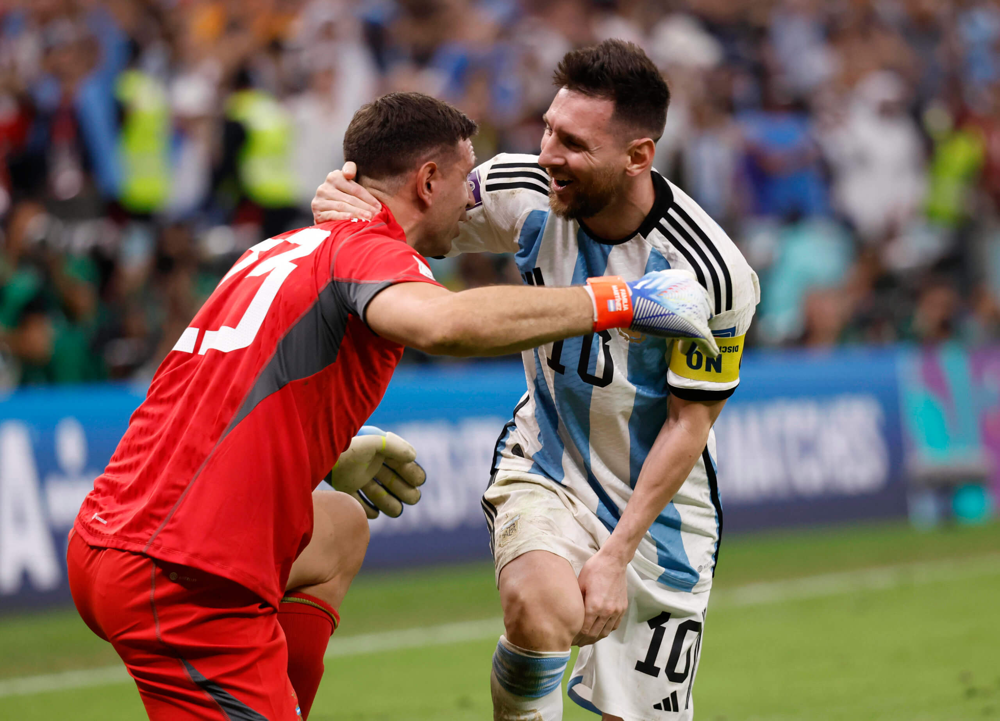
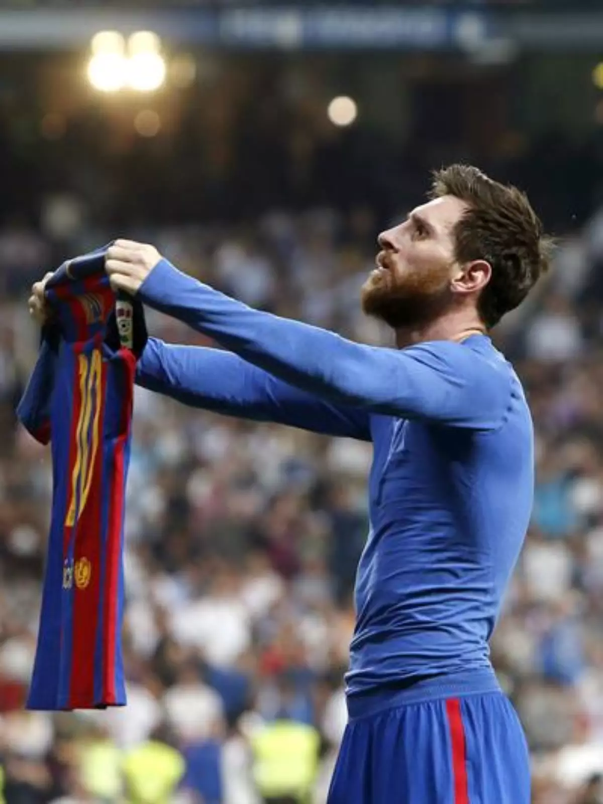
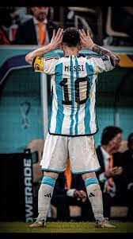
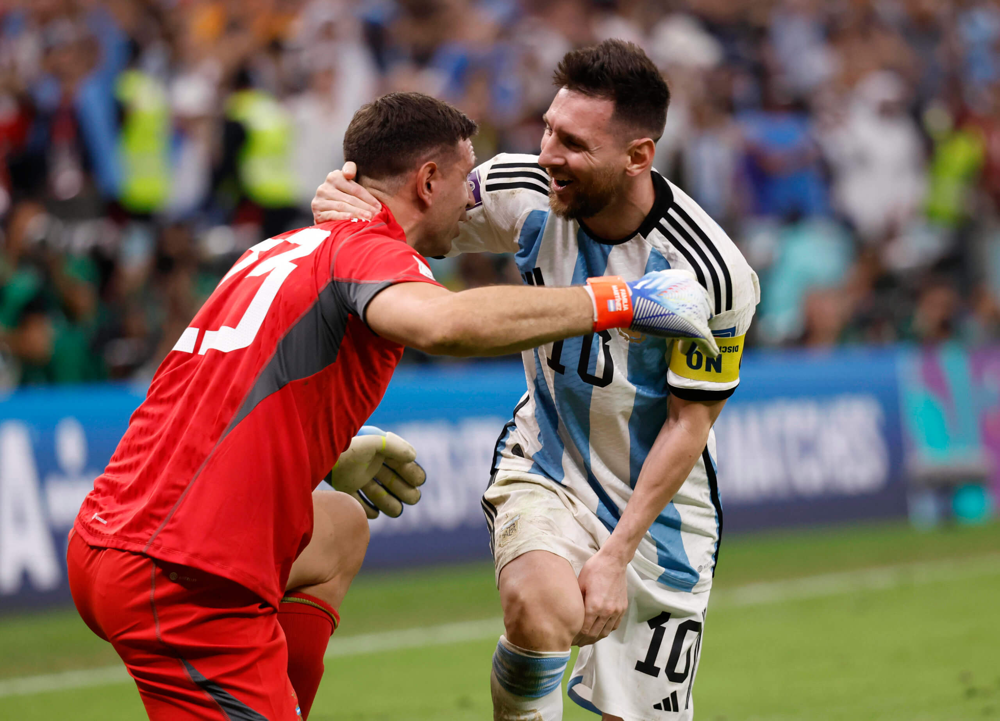
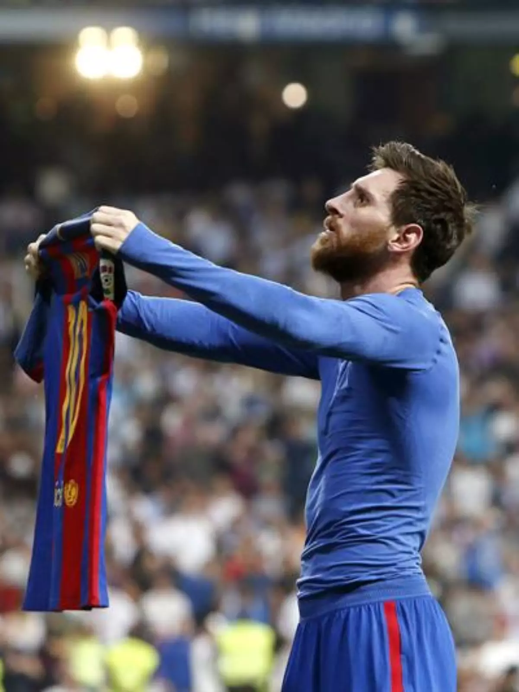
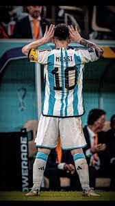
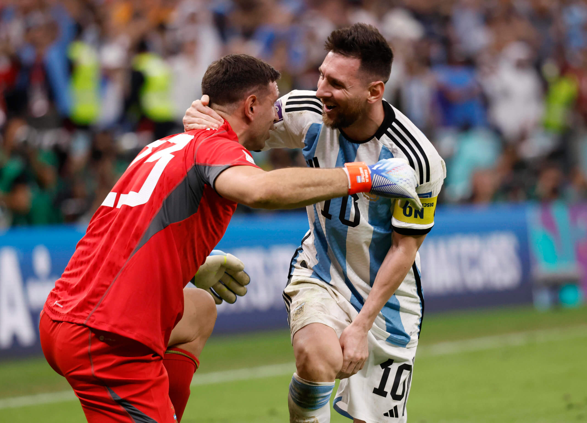
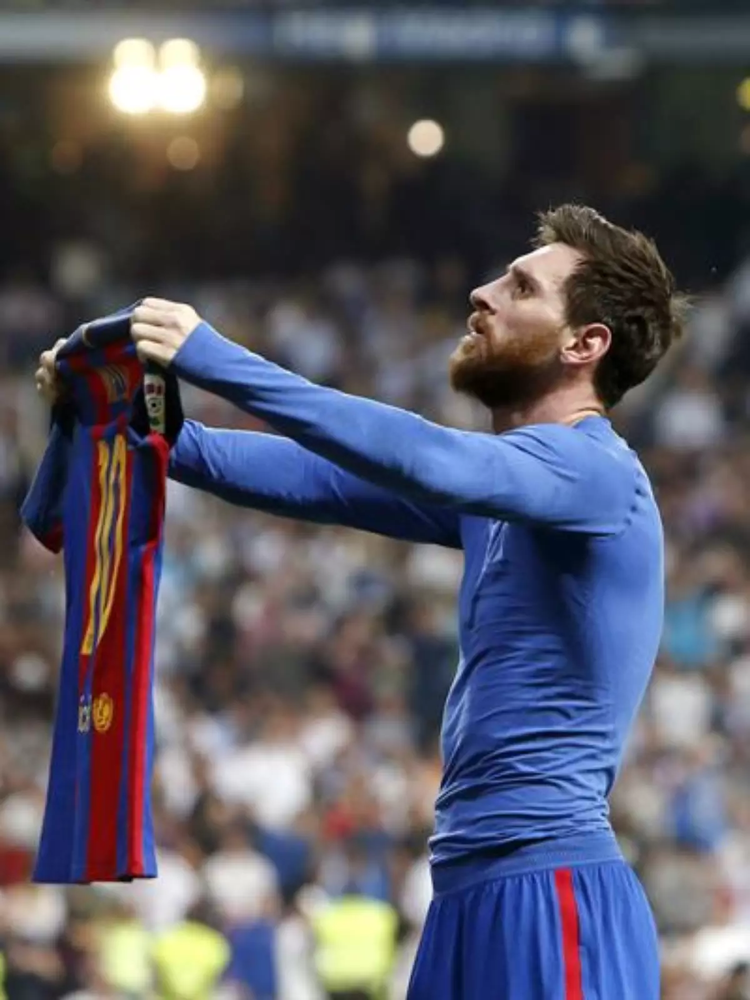
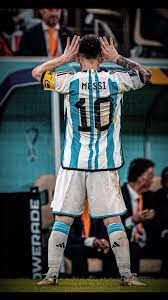

Imagens
 







Lionel Messi, nascido em 24 de junho de 1987, é um jogador de futebol argentino que atua como atacante. Ele é considerado um dos melhores jogadores de todos os tempos.
Messi começou sua carreira no Barcelona, onde se destacou e conquistou inúmeros títulos, incluindo a Liga dos Campeões da UEFA e vários títulos da La Liga.


